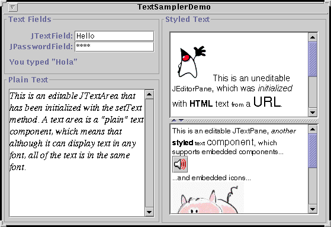

Feedback Form
|
|
Start of Tutorial > Start of Trail > Start of Lesson |
Search
Feedback Form |
Here's a picture of an application that shows one of each of Swing's text components. The
Try this:
- Compile and run the application. The main source file is
TextSamplerDemo.java. You will need some additional files to run this program. See the examples index for links to all the files required by this example.
See Getting Started with Swing if you need help compiling or running this application.- Type some text into the text field and press Return. Do the same with the password field.
- Select and edit text in the text area and the text pane. Use special keyboard keys to cut, copy, and paste text.
- Try to edit the text in the editor pane, which has been made uneditable with a call to
setEditable.- Look in the text pane to find an example of an embedded component and an embedded icon.
TextSamplerDemoprogram is fairly basic in how it uses the text components: It simply creates each one, configures it, and adds it to the frame's content pane. This section looks at the code fromTextSamplerDemothat creates each text component. With the information in this short section alone, you can quickly learn everything necessary to include the various text components in a program and interact with them on a basic level.This section has five parts:
TextSamplerDemocontains a text field in the upper left corner of the main frame. Here's the code that creates the text field.As with buttons, you can set an action command and register an action listener on a text field. Here's theJTextField textField = new JTextField(10); textField.setActionCommand(textFieldString); textField.addActionListener(this);actionPerformedmethod implemented by the text field's action listener, which is shared with the program's password field. TheactionPerformedmethod copies the text field's contents to a label.For descriptions of the constructor and thepublic void actionPerformed(ActionEvent e) { String prefix = "You typed \""; if (e.getActionCommand().equals(textFieldString)) { JTextField source = (JTextField)e.getSource(); actionLabel.setText(prefix + source.getText() + "\""); } else { JPasswordField source = (JPasswordField)e.getSource(); actionLabel.setText(prefix + new String(source.getPassword()) + "\""); } }getTextmethod used by this program, refer to How to Use Text Fields. That section also includes information and examples of customized text fields, including how to write a validated field.
JPasswordFieldis a subclass ofJTextFieldthat, instead of showing the actual character the user types, shows another character such as an asterisk '*'. This type of field is useful for prompting users to enter passwords when logging in or validating identity. Here's the code fromTextSamplerDemothat creates the password field and registers an action listener on it:This code is the similar to that used to create the text field. The password field shares the text field's action listener, which uses these three lines of code to copy the password field's content to a label:JPasswordField passwordField = new JPasswordField(10); passwordField.setActionCommand(passwordFieldString); passwordField.addActionListener(this);Notice that this code uses theString prefix = "You typed \""; ... JPasswordField source = (JPasswordField)e.getSource(); actionLabel.setText(prefix + new String(source.getPassword()) + "\"");getPasswordmethod to get the contents of the password field instead ofgetText. Providing a Password Field explains why and provides additional information about password fields. Remember that password fields are text fields, so the information covered in How to Use Text Fields pertains to password fields as well.
A text area displays multiple lines of text and allows the user to edit the text with the keyboard and mouse. Here's theTextSamplerDemocode that creates its text area:The constructor used in this example initializes the text area with some text. Next the code sets the text area's font.JTextArea textArea = new JTextArea( "This is an editable JTextArea " + "that has been initialized with the setText method. " + "A text area is a \"plain\" text component, " + "which means that although it can display text " + "in any font, all of the text is in the same font." ); textArea.setFont(new Font("Serif", Font.ITALIC, 16)); textArea.setLineWrap(true); textArea.setWrapStyleWord(true);By default, a text area doesn't wrap lines. Instead it shows all the text on one line, and if the text area is within a scroll pane, allows itself to be scrolled horizontally. This example turns line wrapping on with a call to
setLineWrapand then callssetWrapStyleWordto indicate that the text area should wrap lines at word boundaries rather than at character boundaries.To provide scrolling capability, the example puts the text area in a scroll pane.
A text area is typically managed by a scroll pane. If you put a text area in a scroll pane, be sure to set the scroll pane's preferred size or use a text area constructor that sets the number of rows and columns for the text area.JScrollPane areaScrollPane = new JScrollPane(textArea); areaScrollPane.setVerticalScrollBarPolicy( JScrollPane.VERTICAL_SCROLLBAR_ALWAYS); areaScrollPane.setPreferredSize(new Dimension(250, 250)); areaScrollPane.setBorder(...create border...);This section is the only section provided by this tutorial about using text areas because
JTextAreais a straightforward class to use and is largely backward compatible with the AWTTextAreaclass. If you are interested in customizing a text area, you can apply what you learn in General Rules about Using Text Components. In addition to a slightly customized text pane, the example program described there uses a standard text area as a log. Be sure to check the Summary of Text section for relevant API and other examples that use text areas.
JEditorPaneis the foundation for Swing's styled text components and provides the mechanism through which you can add support for custom text formats.TextSamplerDemodoesn't begin to exerciseJEditorPane's capability. But it does illustrate a very handy, easy-to-use editor pane feature: displaying uneditable help information loaded from a URL. Here's the code that creates the editor pane inTextSamplerDemo:The code uses the default constructor to create the editor pane, then callsJEditorPane editorPane = new JEditorPane(); editorPane.setEditable(false); ...//create a URL object for the TextSamplerDemoHelp.html file... try { editorPane.setPage(url); } catch (IOException e) { System.err.println("Attempted to read a bad URL: " + url); }setEditable(false)so the user cannot edit the text. Next, the code creates theURLobject, and calls thesetPagemethod with it. ThesetPagemethod opens the resource pointed to by the URL and figures out the format of the text (which in the example is HTML). If the text format is known, the editor pane initializes itself with the text found at the URL. A standard editor pane can understand plain text, HTML, and RTF.The code that creates the URL is missing from the above code sample and is interesting in and of itself. Here it is:
This code uses system properties to compute aString s = null; try { s = "file:" + System.getProperty("user.dir") + System.getProperty("file.separator") + "TextSamplerDemoHelp.html"; URL helpURL = new URL(s); /* ... use the URL to initialize the editor pane ... */ } catch (Exception e) { System.err.println("Couldn't create help URL: " + s); }fileURL for the help file. Due to security restrictions, this code won't work in untrusted applets. Instead, use the applet's codebase to compute anhttpURL.Like text areas, editor panes are typically managed by a scroll pane:
This short section shows a typical and basic use of an editor pane. However, many programs need to use editor panes in more sophisticated ways. To find out the types of things you can do with editor panes, and how they differ from text panes, refer to Concepts: About Editor Panes and Text Panes.JScrollPane editorScrollPane = new JScrollPane(editorPane); editorScrollPane.setVerticalScrollBarPolicy( JScrollPane.VERTICAL_SCROLLBAR_ALWAYS); editorScrollPane.setPreferredSize(new Dimension(250, 145));
The final text component in our tour isNow that you've seen all of the text components in action, it's time to learn aboutJTextPane, which is aJEditorPanesubclass. Here's code fromTextSamplerDemothat creates and initializes a text pane.Briefly, this code hard-codes the initial text into an array and creates and hard-codes several styles--objects that represent different paragraph and character formats--into another array. Next, the code loops over the arrays, inserts the text into the text pane, and specifies the style to use for the inserted text. Although this makes for an interesting example and concisely shows off several features ofJTextPane textPane = new JTextPane(); String[] initString = { /* ... fill array with initial text ... */ }; String[] initStyles = { /* ... fill array with names of styles ... */ }; //Create the styles we need. initStylesForTextPane(textPane); Document doc = textPane.getDocument(); //Load the text pane with styled text. try { for (int i=0; i < initString.length; i++) { doc.insertString(doc.getLength(), initString[i], textPane.getStyle(initStyles[i])); } } catch (BadLocationException ble) { System.err.println("Couldn't insert initial text."); }JTextPane, "real-world" programs aren't likely to initialize a text pane this way. Instead, the program would use a text pane to save out a document, which would then be used to intialize the text pane.To find out the types of things you can do with text panes, and how they differ from editor panes, refer to Concepts: About Editor Panes and Text Panes.
JTextComponent
and the features it provides to all of its subclasses.
Proceed to the next section,
General Rules for Using Text Components.
|
|
Start of Tutorial > Start of Trail > Start of Lesson |
Search
Feedback Form |